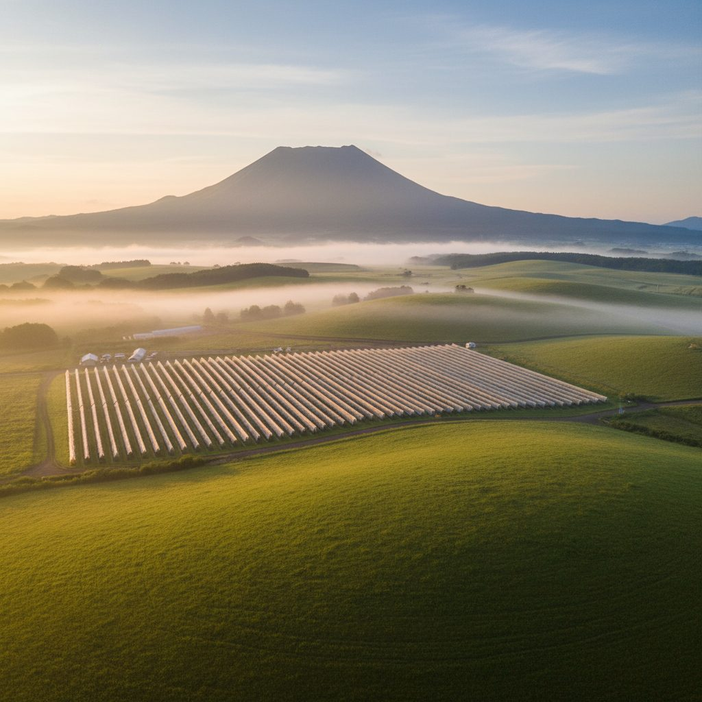
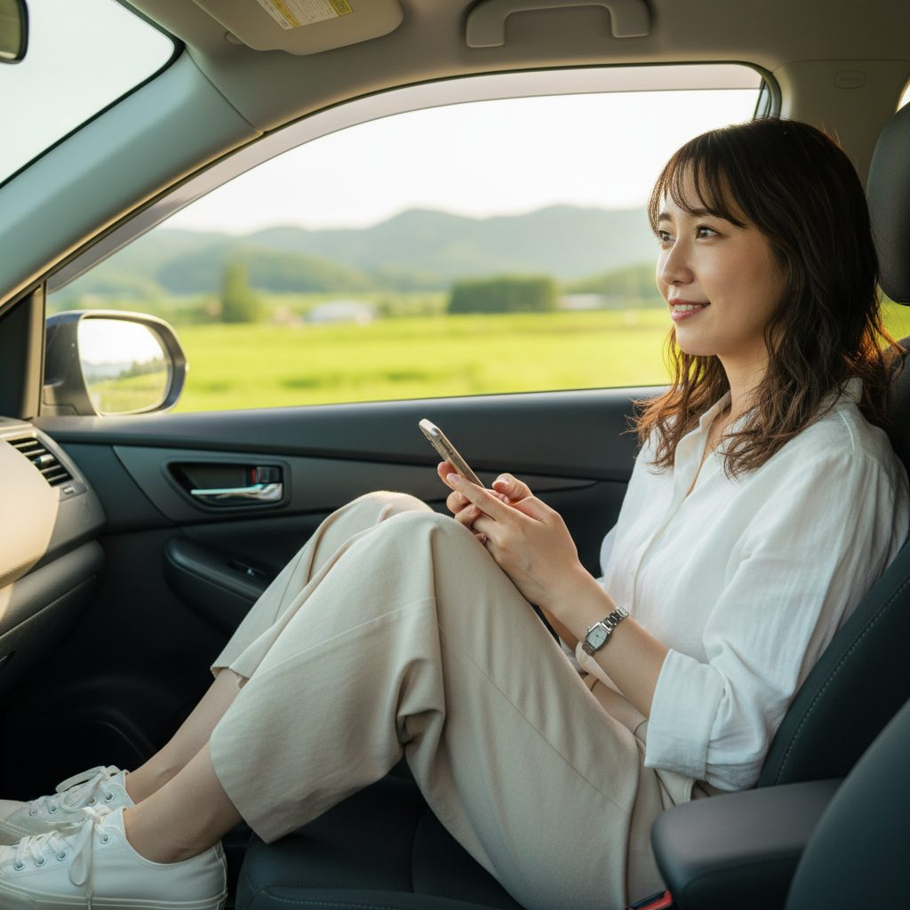
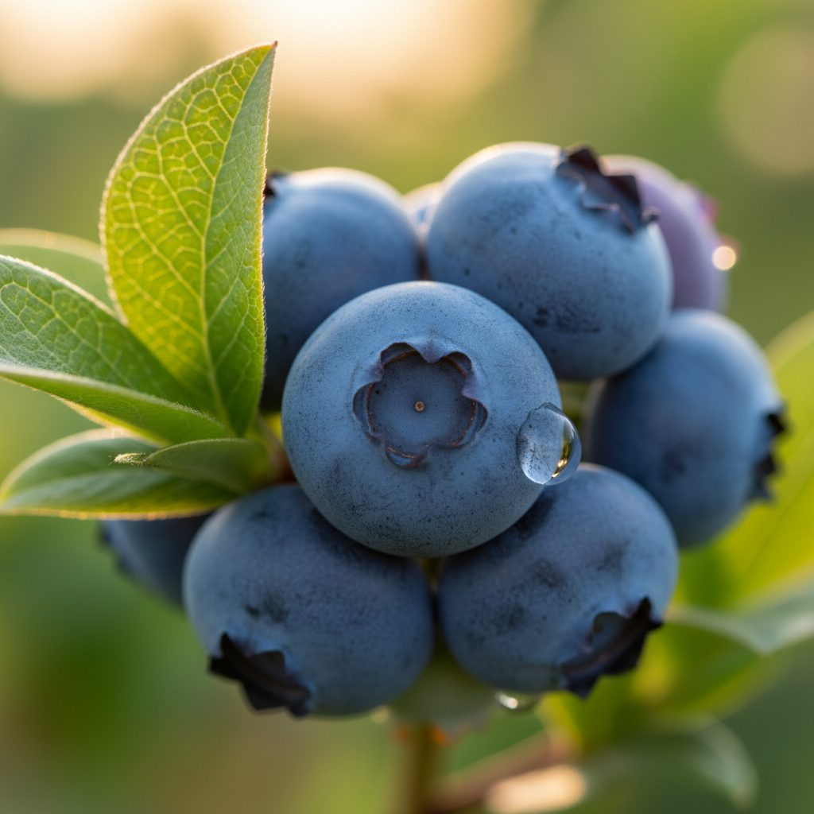
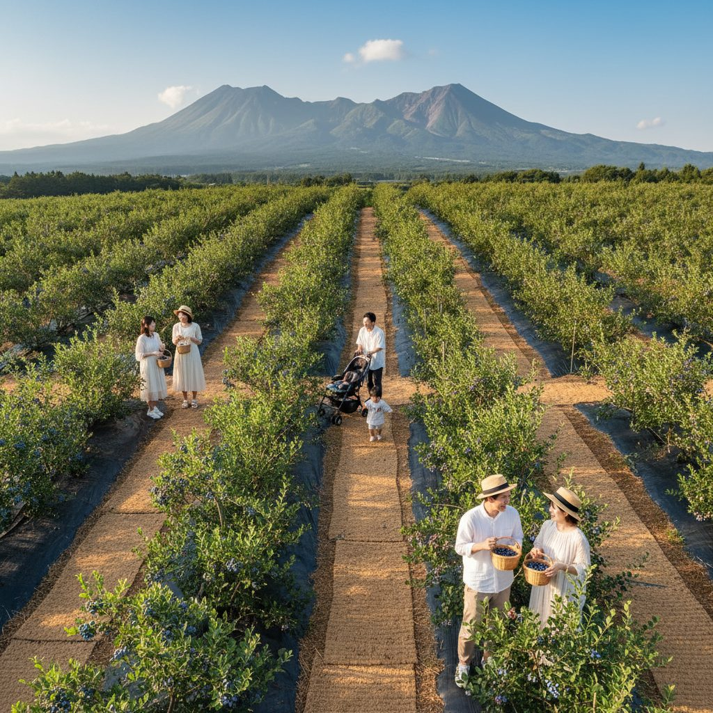
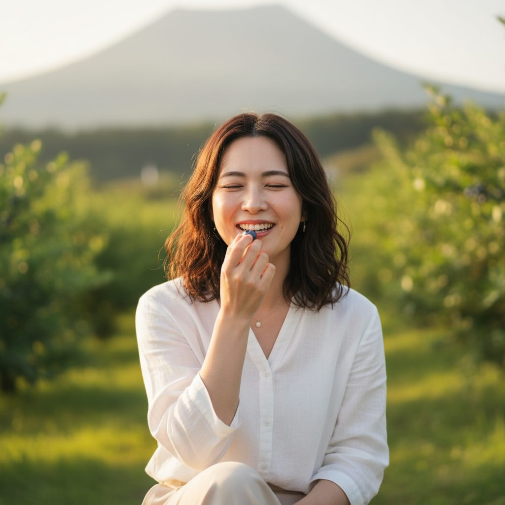
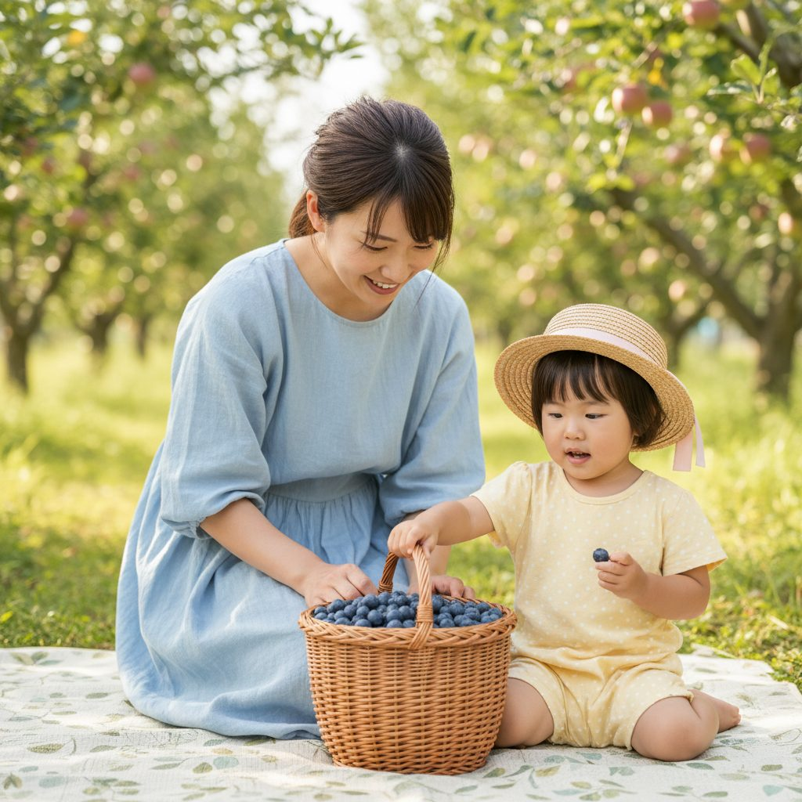
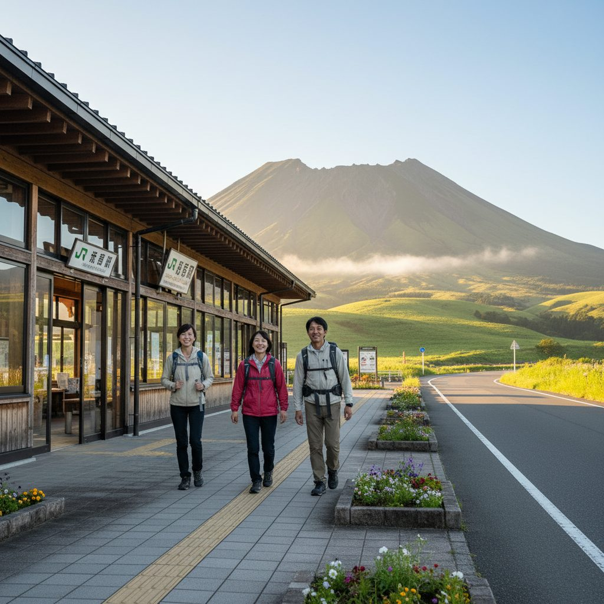
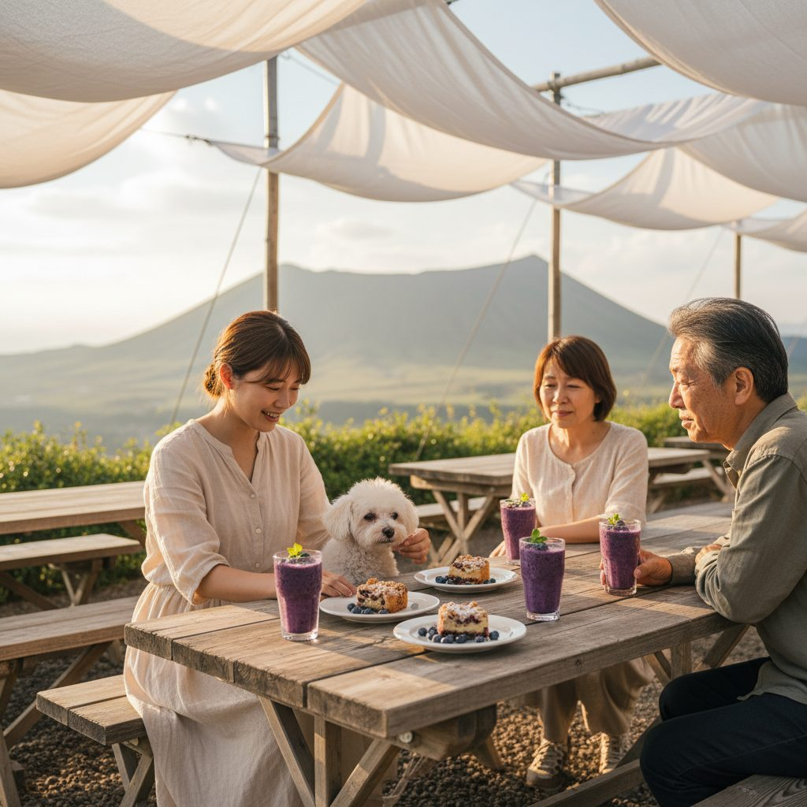
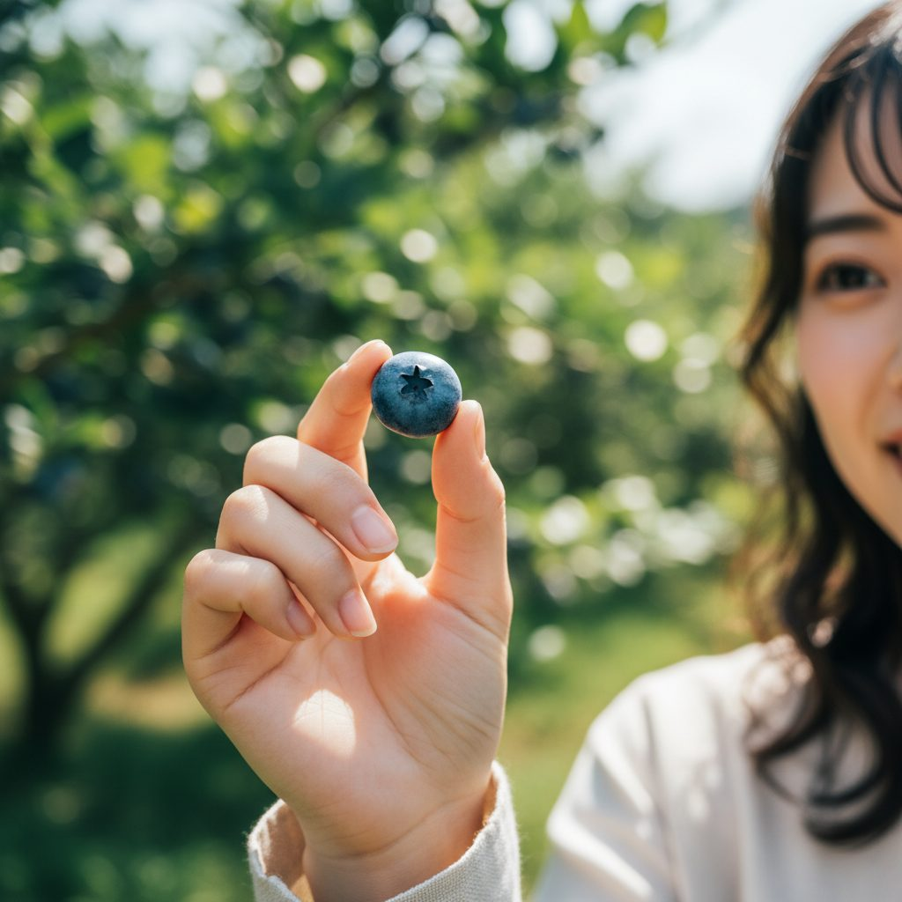
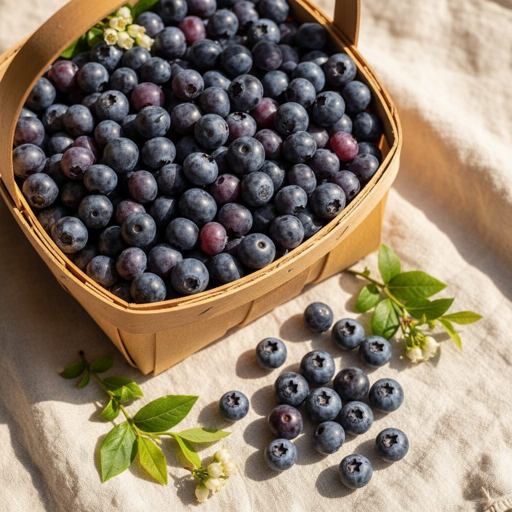

阿蘇ブルーベリーオーシャンファーム ／ AI動画モックアップ v1
合同会社アグリグレースファクトリー 長井 秀典 様 ／ ライトプラン・約30秒・実写風AI動画 ／ 2026-05-24 ドラフト
観光農園
プレオープン告知
YouTube/SNS/HP掲載
日本トップクラス65品種
JR阿蘇駅 徒歩10分
🎥 参考動画


📋 案件概要
🎯 訴求ポイント（USP）
① 日本トップクラス65品種の食べ比べ体験（核心訴求・テロップ＋ナレで二重訴求）
② JR阿蘇駅 徒歩10分／無料駐車場20台（観光客アクセス◎）
③ シート敷き完備でベビーカーOK（親子・女性層に響く快適性）
④ 阿蘇の大自然の中での食べ放題体験（ロケーション資産）
② JR阿蘇駅 徒歩10分／無料駐車場20台（観光客アクセス◎）
③ シート敷き完備でベビーカーOK（親子・女性層に響く快適性）
④ 阿蘇の大自然の中での食べ放題体験（ロケーション資産）
📽 シーン構成（全8シーン・約30秒）

S10–4s／フック
あなたは、何種類食べたことがありますか？
ナレ：あなたは、何種類のブルーベリーを、食べたことがありますか？
絵：阿蘇の大草原ロング → 朝霧と農園の俯瞰。雄大さで掴む。
絵：阿蘇の大草原ロング → 朝霧と農園の俯瞰。雄大さで掴む。

S24–8s／課題提起
_（テロップなし・余白）_
ナレ：（間）
絵：阿蘇のドライブ中の女性。窓の外の緑、スマホで観光情報を探す手元。
絵：阿蘇のドライブ中の女性。窓の外の緑、スマホで観光情報を探す手元。

S38–13s／USP1
日本トップクラス 65品種
ナレ：この夏、阿蘇の高原に、日本トップクラス、
絵：ブルーベリーの粒のマクロ。深い青紫、朝露、葉の緑。
絵：ブルーベリーの粒のマクロ。深い青紫、朝露、葉の緑。

S413–17s／USP2
食べ比べ体験
ナレ：六十五品種の農園が、誕生します。
絵：シート敷き園内俯瞰。カップル・親子・友達同士が散らばって摘み取り中。背景は阿蘇連山。
絵：シート敷き園内俯瞰。カップル・親子・友達同士が散らばって摘み取り中。背景は阿蘇連山。

S517–21s／体験ピーク
シート敷き／ベビーカーOK
ナレ：シート敷きの園内で、家族みんなで、食べ比べ。
絵：摘みたてを口に運ぶ女性のはじける笑顔。背景に阿蘇の山並み。
絵：摘みたてを口に運ぶ女性のはじける笑顔。背景に阿蘇の山並み。

S621–24s／親子の幸福感
_家族みんなで_
ナレ：（間）
絵：シートに座る親子。バスケットいっぱいのブルーベリーに手を伸ばす子ども。
絵：シートに座る親子。バスケットいっぱいのブルーベリーに手を伸ばす子ども。

S724–27s／アクセス＆カフェ
JR阿蘇駅 徒歩10分／無料駐車場20台
ナレ：JR阿蘇駅から、徒歩十分。
絵：JR阿蘇駅から農園方向へ歩く観光客。背景に阿蘇山。
絵：JR阿蘇駅から農園方向へ歩く観光客。背景に阿蘇山。

S827–30s／CTA
2026年6月 プレオープン
ご予約：asoblueberryocean.com
ご予約：asoblueberryocean.com
ナレ：二〇二六年六月、プレオープン。
絵：木陰のレストエリア＋カフェメニュー＋ロゴ＋URL。ペット同伴OKをさりげなく。
絵：木陰のレストエリア＋カフェメニュー＋ロゴ＋URL。ペット同伴OKをさりげなく。
🪝 フック案 バリエ（S1差し替え）

A（推奨）：問いかけ

B：断定／豊かさ訴求
🎙 台本（ナレ全文・A案）
あなたは、何種類のブルーベリーを、食べたことがありますか？
この夏、阿蘇の高原に、日本トップクラス、六十五品種の農園が、誕生します。
シート敷きの園内で、家族みんなで、食べ比べ。
JR阿蘇駅から、徒歩十分。
二〇二六年六月、プレオープン。
この夏、阿蘇の高原に、日本トップクラス、六十五品種の農園が、誕生します。
シート敷きの園内で、家族みんなで、食べ比べ。
JR阿蘇駅から、徒歩十分。
二〇二六年六月、プレオープン。
🎨 演出のキモ
① 冒頭3秒は阿蘇の雄大さで掴む（観光地系の上質な動画と認識させる）
② 65品種はナレ＋テロップで二重訴求（唯一無二のUSP）
③ 「人」を3層（若い女性／親子／シニア）で映し、視聴者が自分を重ねられるようにする
④ 色味は 朝霧の青〜緑（前半）→ 陽の暖色（後半）で時間経過を演出
⑤ ラスト3秒はロゴ＋URL固定。予約導線を明確化
② 65品種はナレ＋テロップで二重訴求（唯一無二のUSP）
③ 「人」を3層（若い女性／親子／シニア）で映し、視聴者が自分を重ねられるようにする
④ 色味は 朝霧の青〜緑（前半）→ 陽の暖色（後半）で時間経過を演出
⑤ ラスト3秒はロゴ＋URL固定。予約導線を明確化
⚠️ NG・審査対策
❌ 「持ち帰り○○袋分！」訴求 → プレオープン期は持ち帰り不可（HP明示）
❌ 「日本一」断定表記 → 「日本トップクラス」で統一（HP準拠）
❌ ペット園内自由 → レストエリアのみ表現
❌ 特定の有名人を想起させる顔（AI生成キャラ・オリジナル顔指定済み）
❌ 過度な疾患・効能訴求 → 観光案件として該当なし
❌ 「日本一」断定表記 → 「日本トップクラス」で統一（HP準拠）
❌ ペット園内自由 → レストエリアのみ表現
❌ 特定の有名人を想起させる顔（AI生成キャラ・オリジナル顔指定済み）
❌ 過度な疾患・効能訴求 → 観光案件として該当なし
✅ クライアントにご確認いただきたいこと（仮置きを含む）
- ［仮置き］動画の尺は30秒で進めます。20秒／45秒のご希望があればお知らせください。
- ［仮置き］BGMは爽やか・癒し系アコースティック（夏の高原の朝のイメージ）で仮置きしました。明るくテンポの良いポップ等のご希望があればお知らせください。
- ［仮置き］テンポはゆっくり〜中速で仮置きしました。
- ［仮置き］代表者様のご出演はなし（AI生成キャラのみ）で仮置きしました。後ろ姿／手元のみのご希望があればお知らせください。
- ［仮置き］メインキャストは若い女性／親子（ママ＋幼児）／シニア夫婦の3層で仮置きしました。年齢層のご希望があればお知らせください。
- ［仮置き］CTAはHP予約フォーム（asoblueberryocean.com）で仮置きしました。Instagram／電話番号への変更／併記のご希望があればお知らせください。
- フックはA案（問いかけ）推奨。B案（断定・豊かさ訴求）も並列で生成しております。お好みをお知らせください。
- ナレ収録は男性低音／女性ナレ／AI合成のどれが好みでしょうか？（観光×女性ターゲットなら女性ナレ推奨）
- カフェの具体メニュー描写はふんわりイメージで仮置きしています。「商品はまだ完成していない」とのお話のため、特定商品の描写は避けています。
- キャラの顔の方向性：オリジナルAI生成顔で「明るく自然な日本人」のみ指定しています。特に「こういう雰囲気が良い」というイメージがあればお知らせください。